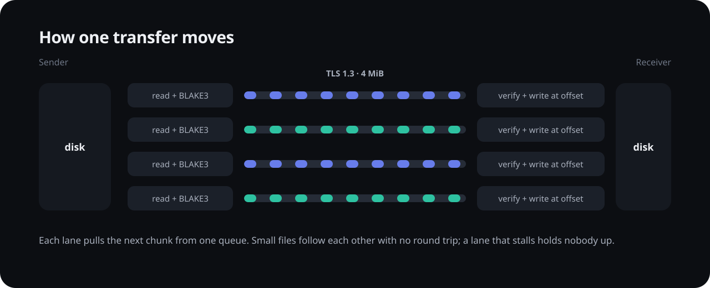

Windows · Android · iPhone · any browser
Your files,
on parallel lanes.
Photos, videos, folders and text between your PC and your phones, over your own Wi-Fi. Encrypted end to end, checked chunk by chunk, and it picks up where it stopped when the connection drops.
- 3 GB/s4 encrypted lanes, in memory on one PC
- 4.8×faster than LocalSend 1.18 with 200 photos
- TLS 1.3both sides proven by their key
Why it is fast
Most tools send one file per request and wait for an answer before the next one. With two thousand holiday photos, that waiting is most of the time.
SweaxDrop opens several encrypted lanes at once. Every lane takes the next 4 MiB chunk from one shared queue: a huge video is split across all of them, small files follow each other with no round trip, and a lane that stalls holds nobody up. Reading, hashing, encrypting and writing overlap on separate threads.
The lanes you see in the app are the real ones: each track moves as fast as its own connection moves bytes.

Measured, not promised
Every number on this page comes from sweaxdrop-bench in the repository, run on one PC (AMD Ryzen 5 7600, NVMe SSD, Windows 11) against the official LocalSend 1.18.2 command-line app, with the same files on the same drive. Wi-Fi results with real phones are added as they are measured.
Over Wi-Fi the radio is the limit for one big file. The differences that stay are in many small files, in the time to start, and in what happens when the connection drops.
Private by construction
- Each device has its own Ed25519 key. Its id is derived from that key, so it cannot be borrowed.
- Every transfer runs inside TLS 1.3 with both sides proving their key. Paired devices are pinned: a different key is refused.
- Pairing by PIN uses SPAKE2 and checks both TLS keys, so someone relaying the connection cannot pair in your place.
- Every 4 MiB chunk carries a BLAKE3 hash and is verified before it is written.
- Nothing leaves your network: no account, no server, no telemetry.

Get SweaxDrop
Questions
Does it need internet?
No. Devices find each other on the local network and talk directly. A phone hotspot or USB tethering works too, and is often faster than going through a router.
Is it faster than LocalSend everywhere?
Not for one huge file over Wi-Fi: there both are limited by the radio. It is faster with many files, starts sooner, and resumes instead of starting over. The numbers above show exactly where.
What about the browser client?
It is plain HTTP on your network, protected by the one-time secret in the QR code, because browsers cannot accept the PC's self-signed certificate without a warning. The apps use the encrypted protocol.
Where do received files go?
Windows: Downloads\SweaxDrop or a folder you choose. Android: photos and videos to the gallery, the rest to Download/SweaxDrop. iPhone: Photos, and the Files app under SweaxDrop.